Escuta ativa
Participação e cidadania
Carta do Futuro
Uma experiência para transformar as prioridades de hoje em compromisso com um Paraná mais íntegro, justo e eficiente.
Suas escolhas
Conectando com o futuro…
02 Sua carta